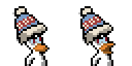
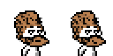
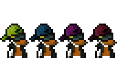
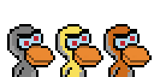

Its my regular hat on multiplayer game.
This is a pixel version of the winter hat from the game "Don`t Starve".

Its my second regular hat on multiplayer game.
This is a pixel version of the character Woodie from the game "Don`t Starve".

Befor I used to wear them often.
These are different color variants of hats Chancy
Yes, I know the shirt is a little darker than the original Chancy

This is not a repaint of Sempay hat.
It's just a slightly enlarged head of an ordinary duck.
Agree it looks funny.